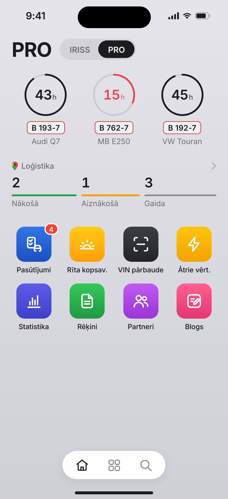
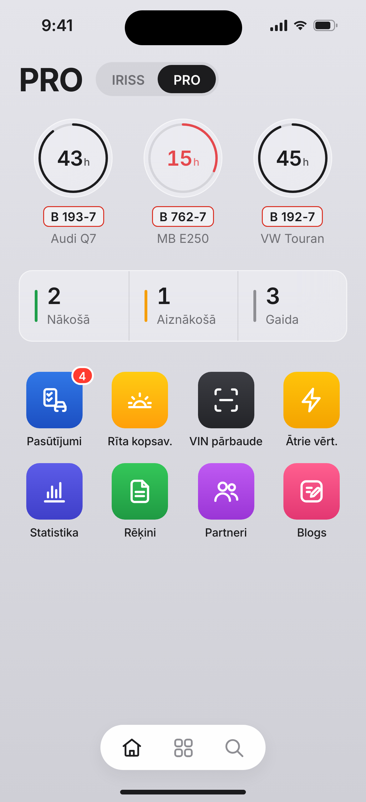
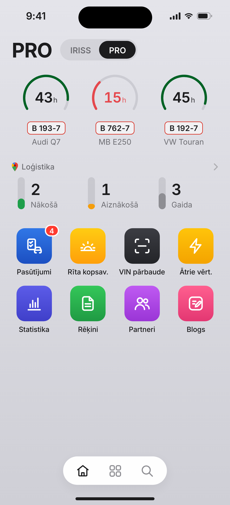
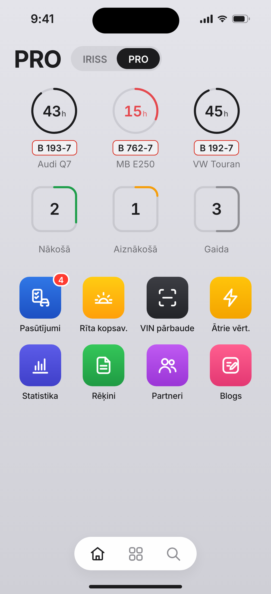
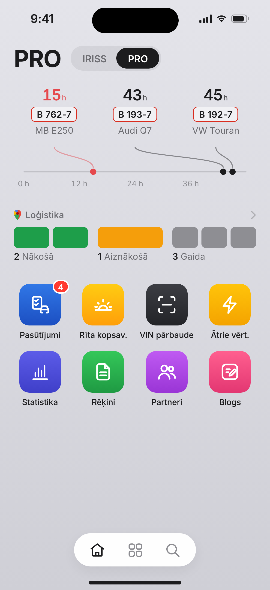
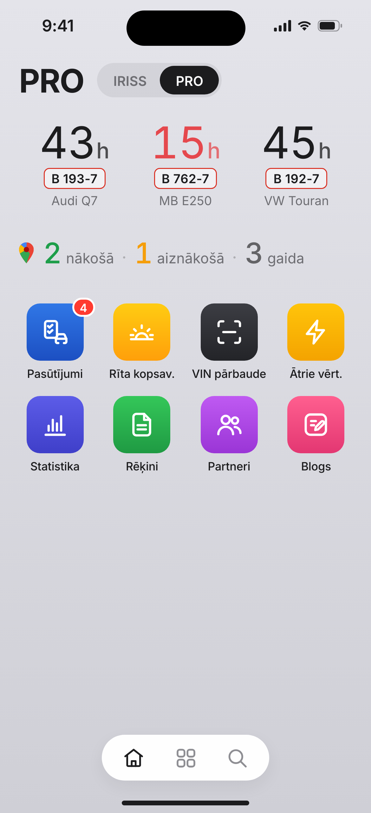
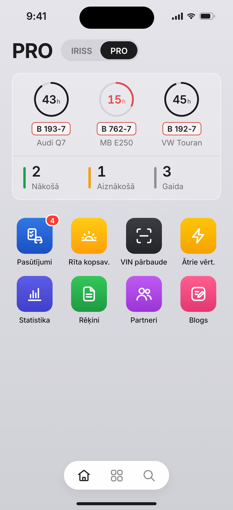
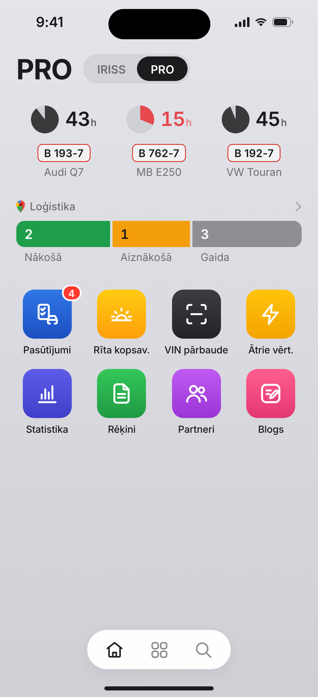
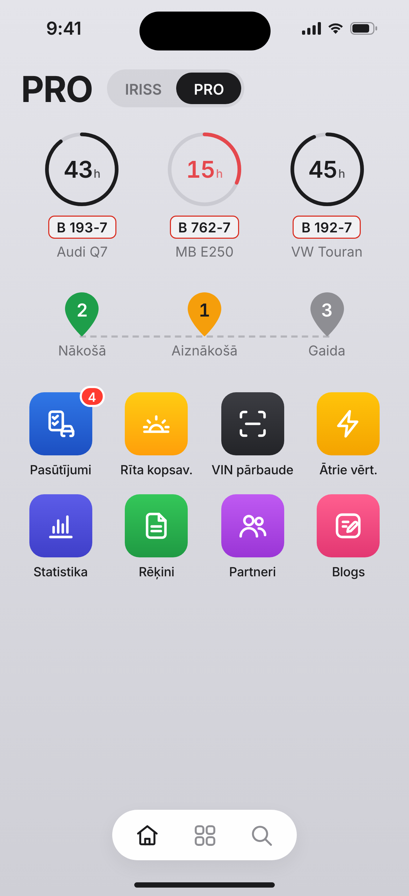
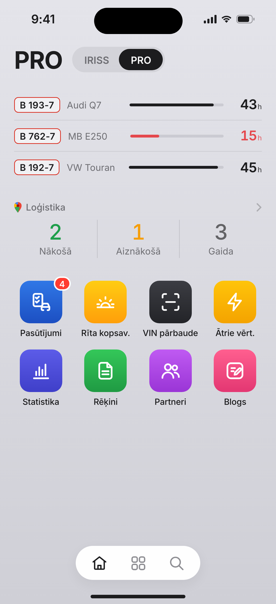

Josla C un flīžu ikonas nemainītas. Atšķiras Pavadzīmju un Loģistikas vidžetu ģimene. Makets - kods tikai pēc Nila "jā".

01 - Aplis un taisnePavadzīmes - 3 px apļi; Loģistika - tā pati 3 px līnija, taisna un sadalīta pēc kravu skaita.

02 - StiklsAbi vidžeti matētā stiklā: pavadzīmes - apaļas lēcas, loģistika - viena taisnstūra stikla josla ar 3 nodalījumiem.

03 - Spidometrs un līmenisMērinstrumentu ģimene: pavadzīmes - 240° spidometra loki CSDD zaļā; loģistika - vertikāli līmeņa stabiņi kā degvielas skala.

04 - Aplis un kvadrātsViens režģis, viena līnija: pavadzīmes - apļa progress (stundas); loģistika - noapaļota kvadrāta kontūra (daļa no visām kravām).

05 - Laika ass un blokiPavadzīmes sakārtotas pēc atlikušā laika un savienotas ar vienu 0-48 h asi (steidzamākā kreisāk); loģistika - viens bloks = viena krava, sagrupēti pēc statusa.

06 - Tikai cipariTipogrāfiskā ģimene bez formām: pavadzīmes - lieli cipari kolonnās; loģistika - viens teikums vienā rindā ar krāsainiem cipariem.

07 - Divi stāviAbi vidžeti vienā caurspīdīgā rāmī ar matu līniju starp tiem: augšā apļi (pavadzīmes), apakšā rindas ar svītru (loģistika). Divi atsevišķi pieskārieni.

08 - Pilni laukumiAizpildītas formas, bez kontūrām: pavadzīmes - pulksteņa sektori (atlikušais laiks); loģistika - viena aizpildīta josla, sadalīta pēc statusa.

09 - Maršruts ar tapāmPavadzīmes - apļi; loģistika - maršruta līnija ar Google Maps formas tapām (skaitlis tapā), kas sasaucas ar Loģistikas ikonu.

10 - Rindas un kolonnasPavadzīmes - 3 rindas kā Apple Atgādinājumi (numurzīme, auto, joslas atlikums); loģistika - 3 kolonnas ar matu līnijām kā segmentu slēdzis.